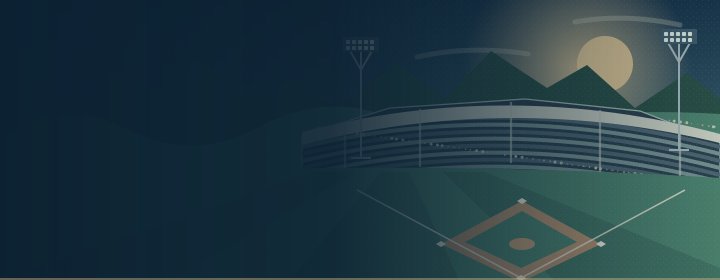
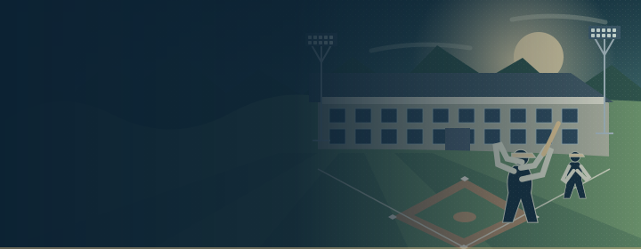
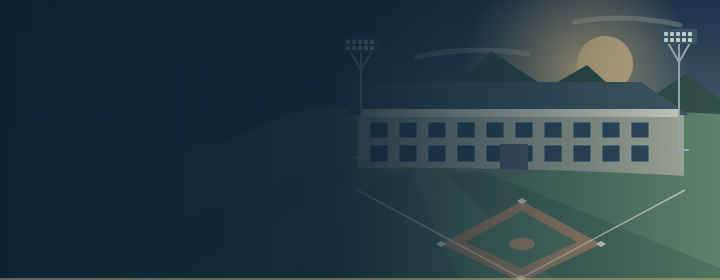
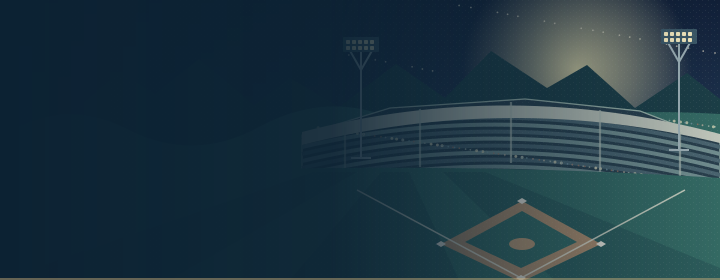
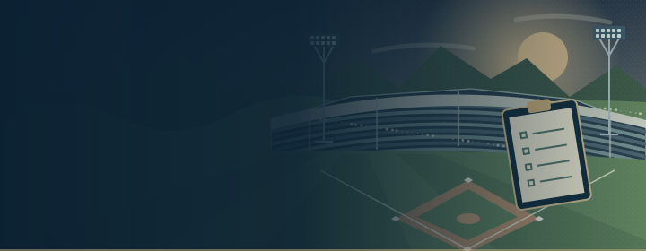

ゲーム内で使用するオリジナルのベクター素材。拡大しても鮮明です。球場はイラストであり実写ではありません。
画面背景イラスト（6点）











機能アイコン（64点）


ホームhome
部員team
経営school
野球ball
検索search
その他more
予定calendar
時間clock
進むchevron
開始play
練習training
バットbat
グラブglove
投球pitcher
走塁runner
ミートtarget
強振power
バントbunt
守備shield
球場・塁diamond
送球throw
選手交代swap
スライディングslide
大会・記録trophy
表彰medal
成績chart
財政wallet
健康・疲労heart
医療medical
ユニフォームjersey
帽子cap
施設building
寮・休養bed
監督coach
新聞news
アルバムcamera
注目・特能star
卒業生graduation
履歴history
設定settings
保存save
読み込みupload
書き出しdownload
更新refresh
編集edit
確定check
注意warning
情報info
メニューmenu
閉じるclose
コントローラーgamepad
リプレイreplay
視察eye
絞り込みfilter
並べ替えsort
一覧grid
目標flag
覚醒bolt
地域location
解禁条件lock
知識・ヘルプbook
タイムwhistle
帰塁arrowBack
進塁arrowUp
アプリロゴ・カラーパレット
#14293d#246b55#b79b65#edf0ef#fffefa#192631